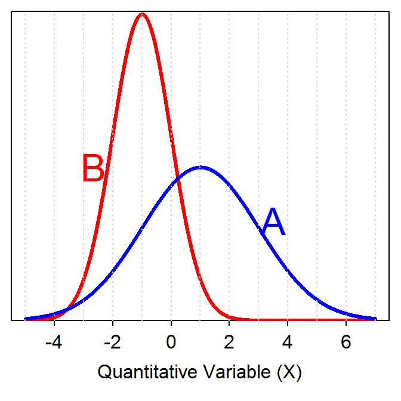
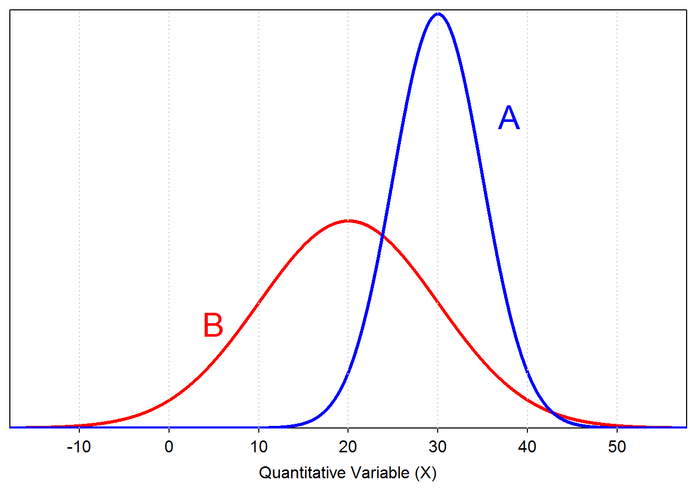

Shape from Histograms
Answer the questions below using the histograms below. 
- What is the shape of each histogram?
- For each histogram describe whether the mean is greater than, less than, or approximately equal to the median.
Identify the mean and standard deviation for each population on the graph below (HINT: ``eyeball’’ integers). 
Identify the mean and standard deviation for each population on the graph below (HINT: ``eyeball’’ integers). 
You can click on each question to see an answer. Click on it again to close the answer.
Answer the questions below using the histograms below.
Answer the questions below using the boxplots below.